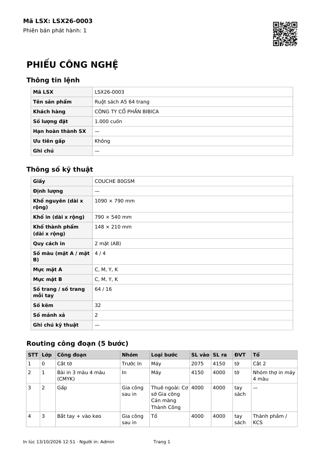
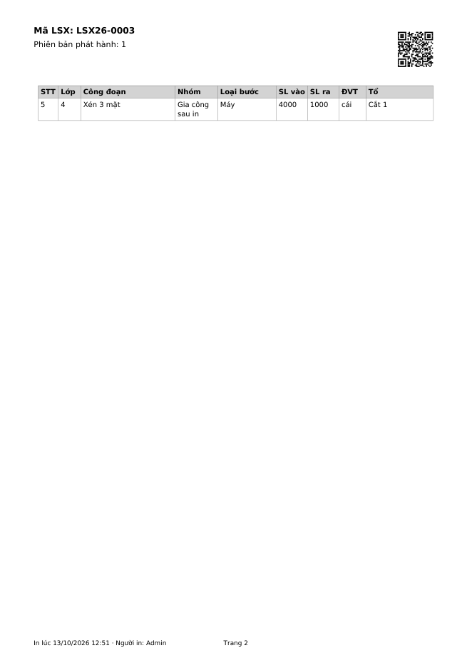
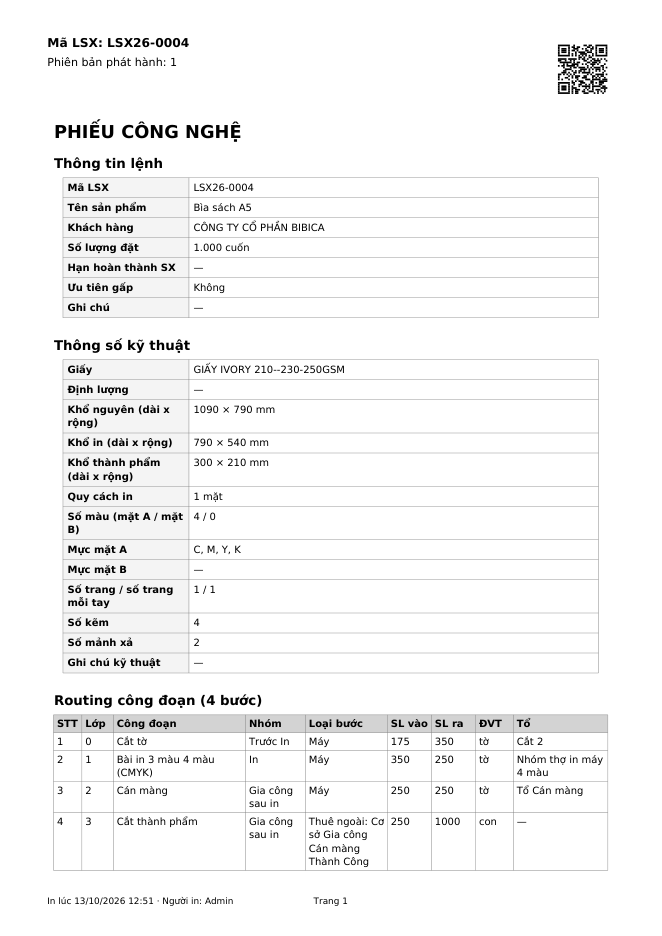
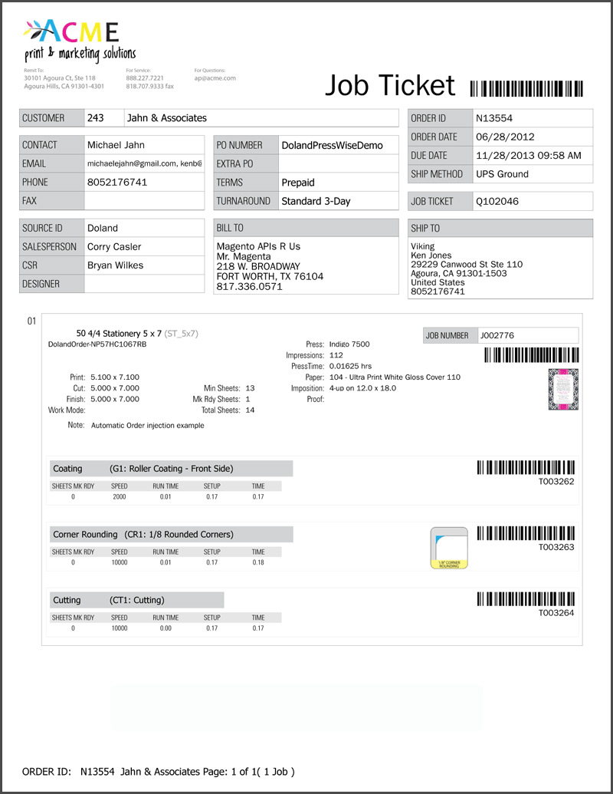
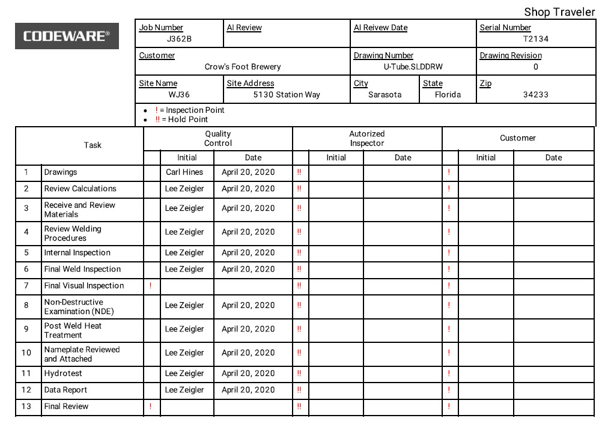
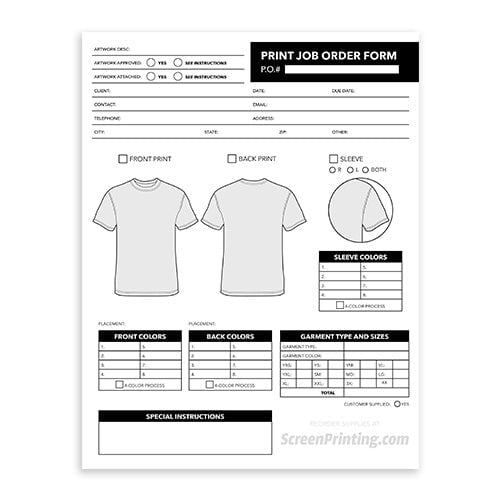

Phiếu A4 in từ nút "In phiếu công nghệ" ở ngăn lệnh, đi theo hàng xuống xưởng. Mỗi phương án dựng bằng số thật của LSX26-0003 (ruột sách 64 trang, 5 bước, có bước thuê ngoài) và LSX26-0004 (bìa A5, 4 bước). Trang vẽ đúng khổ 210 × 297 mm.

LSX26-0003 hiện tại, trang 1/2

Trang 2 chỉ còn 1 bước "Xén 3 mặt"

LSX26-0004 hiện tại
Chỗ dở: hai bảng lưới chữ đậm 20 dòng chiếm 2/3 trang trước khi tới các bước, nên 5 bước đã tràn sang trang 2. Mã LSX nói hai lần. Các dòng trống vẫn in ("Định lượng —", "Hạn hoàn thành SX —", "Ưu tiên gấp Không"). Mực nối bằng dấu phẩy, chân trang nối bằng dấu chấm giữa. Cột "Lớp" 0 1 2 3 thợ không hiểu. Không ghi máy nào chạy, không ghi số tờ nguyên phải xuất kho, không có chỗ để thợ ghi số hay ký giao nhận. Chưa có đơn hàng, hạn giao khách, người kinh doanh để hỏi.

PressWise (Print MIS)
Khối sản phẩm có máy, giấy, bình bài, số tờ. Mỗi công đoạn một khối riêng có mã vạch. Lấy ý cho phương án A và C.

Shop traveler (Codeware)
Một dòng một công việc, các cột trống để người làm ghi ngày và ký. Lấy ý cho phương án B.

Print job order form
Dùng hình để nói quy cách thay vì chữ. Lấy ý vẽ khổ giấy theo tỉ lệ ở phương án A.